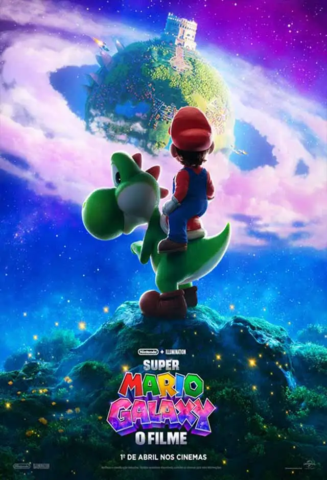
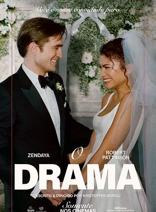
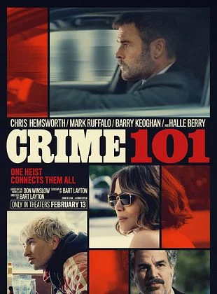
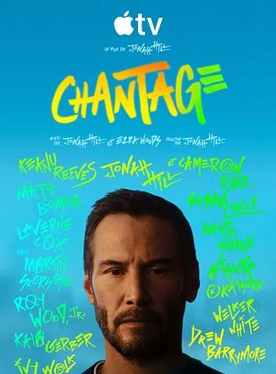

Devoradores de estrelas
Nota: 8,4/10
"Devoradores de Estrelas" (baseado no livro Project Hail Mary de Andy Weir) acompanha Ryland Grace, um professor que acorda sozinho em uma nave espacial, sem memórias e com seus colegas mortos. Ele descobre que é a última esperança da Terra para impedir que o Sol seja destruído por um microrganismo, formando uma amizade improvável com um alienígena para salvar seus mundos.

Ataque brutal
Nota: 5,0/10
Quando um furacão devastador atinge a costa da Carolina do Sul, a cidade de Annieville se torna um cenário de isolamento e terror. Enquanto a tempestade destrói tudo em seu caminho, as águas que inundam as ruas trazem consigo algo muito pior que a correnteza: um grupo de tubarões-touro famintos e letais. Presos em prédios cercados por predadores silenciosos, três grupos de sobreviventes precisam lutar contra o tempo e a natureza brutal para escapar com vida. No meio do caos, a única regra é clara: não entre na água

Super Mario galaxy
Nota: 6,4/10
Após os eventos que salvaram o Reino dos Cogumelos, Mario e seus amigos enfrentam uma ameaça que vai além do horizonte conhecido. Quando a misteriosa Princesa Rosalina é capturada por Bowser Jr., o universo mergulha em uma escuridão sem precedentes. Agora, os irmãos encanadores precisam se unir à Princesa Peach e ao novo aliado Yoshi em uma jornada intergaláctica por mundos desconhecidos. Em uma corrida contra o tempo através das galáxias, eles descobrirão que, no espaço, o perigo não tem gravidade, e a sobrevivência depende de cada fragmento de estrela coletado.

O Drama
Nota: 7,5/10
Emma e Charlie parecem o casal perfeito: jovens, bem-sucedidos e a poucos dias de dizerem o "sim" no altar. No entanto, o que deveria ser a semana mais feliz de suas vidas se transforma em um pesadelo psicológico durante um jantar descontraído com amigos. Quando uma brincadeira de confessar "a pior coisa que já fizeram" leva Emma a revelar um segredo sombrio e chocante de seu passado, a confiança de Charlie é estilhaçada. Agora, em meio aos preparativos para o casamento, ele se vê mergulhado em uma espiral de paranoia e obsessão, questionando se a mulher que ele ama é realmente quem ele pensa que conhece.

Caminhos do Crime
Nota: 6,8/10
Ao longo da icônica rodovia 101, em Los Angeles, uma série de assaltos a joalherias desafia a polícia há anos. O responsável é um ladrão enigmático e meticuloso que segue um código rígido de sobrevivência. Prestes a realizar o "golpe da sua vida" para finalmente se aposentar, ele vê seus planos ameaçados quando seu caminho se cruza com o de uma corretora de seguros desiludida. Enquanto uma aliança perigosa se forma, um detetive obstinado acredita ter finalmente decifrado o padrão do criminoso. Em um jogo de gato e rato onde as linhas entre caçador e caça se confundem, o menor erro pode ser fatal, e não há caminho de volta

Consequência
Nota: 4,5/10
Reef Hawk é uma lenda viva de Hollywood, um astro que construiu uma carreira impecável sobre a imagem de um homem benevolente e sóbrio. Mas sua fachada de perfeição desmorona quando ele se torna alvo de uma extorsão implacável envolvendo um vídeo misterioso de seu passado. Sem saber exatamente o que a gravação revela, mas ciente de que seus pecados antigos podem destruir tudo o que conquistou, Reef mergulha em uma jornada desesperada de redenção. Enquanto tenta se reconciliar com aqueles que prejudicou no passado para evitar seu cancelamento, ele descobre que enfrentar suas próprias falhas pode ser muito mais perigoso do que qualquer escândalo mediático.